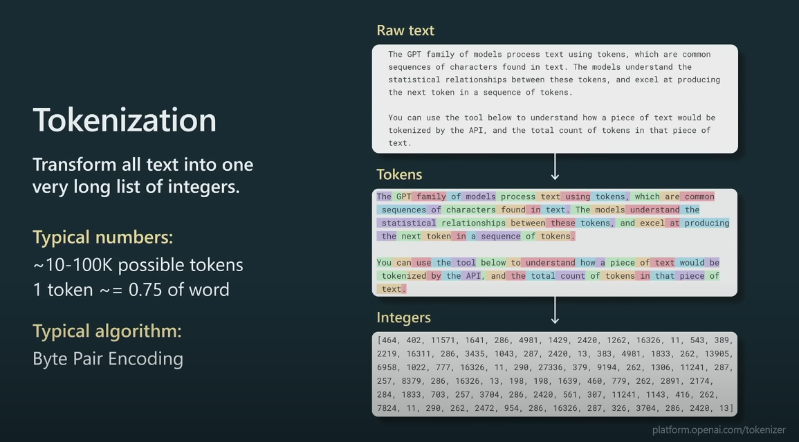
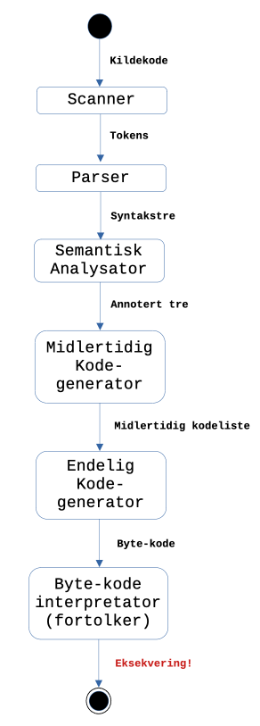
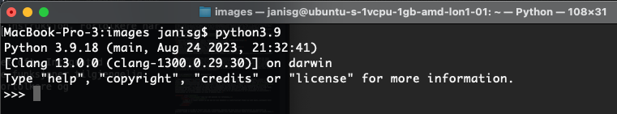

Om programmeringsutdanning
Temaets video (Wat, .htm)
Teamaets kode
# bbp - barnehagebehov (antall) plasser bbp = 200 bbp-plus-5-prosent = bbp + bbp * 0.05 check: bbp-plus-5-prosent is 210 end
1 Programmering, - hvorfor og hvordan?
Vi diskuterte hvorfor i forrige tema (.htm).
Det er mye mer utfordrende å beskrive hvordan.
Programmeringsundervisning er et kontroversielt tema (Brown et al., 2023; Krishnamurthi, 2008; Lau & Guo, 2023). Det finnes ingen generelt annerkjent (bevist) metode for en slik undervisning. Et programmeringsspråk er i seg selv en abstraksjon og representerer mentale modeller til designere av dette språket. Mentale modeller avhenger både av kulturelle, økonomiske og politiske faktorer, og det fører til et stort mangfold av undervisningsopplegg. Det finnes, med andre ord, intet opplegg, som passer i alle kontekster og for hvert individ. Det å lære å programmere er å konstruere mentale modeller ved bruken av eksisterende språkmodeller, som er laget slik at de kan utføres på datamaskiner.
Hvis du er interessert, så kan du se på hvordan andre universiteter tilnærmer seg programmeringsundervisning. Populære amerikanske universiteter tilbyr introduksjonskurs i informatikk/datavitenskap og programmering (Introduction to Computer Science and Programming in Python | Electrical Engineering and Computer Science | MIT OpenCourseWare, 2016; CSBridge, 2023; CS50x 2023, 2023), og de er tilgjengelig online.
I IS-114 skal vi delvis gjenbruke ett opplegg fra Brown University i USA hvor det brukes en datasentrert tilnærming til problemløsning ved hjelp av datamaskiner (.htm). Av programmeringsspråk skal vi bruke Pyret (designet spesielt for programmeringsopplæring og ligner på Python) og JavaScript (pop-språket i dataapplikasjoner anno 2023). I tillegg skal vi stifte kjennskap med et markup-språk HTML og et stilark-språk CSS.
Et stort felt i programvareutvikling er testing. Det er en bred konsensus rundt at all programvare inneholder bugger (det engelske ordet er bugs). For å minimalisere antall bugger i programmene, er det viktig å kjenne til metoder for testing og kode gjennomgang, som kan redusere antall bugger. Derfro skal vi også introdusere testing i vår introduksjon til programmering.
I tillegg skal vi bruke versjonskontrollsystemet Git, for å kunne lagre og samarbeide om progammene. Platformer som Github tilbyr også tjenester som linting (sjekker om koden er skrevet i tråd med en stilstandard i forhold til syntaks og utforming), testing og deployering (kan automatisere kopiering, kompilering og installasjon av koden på en ekstern server i nettsky, for eksempel). Vi skal også bruke en teksteditor og i noen tilfeller utføre programmene lokalt på vår datamasin.
Oppsummert, målsettingen for programmeringsdelen av IS-114 er å lære å designe og teste programmer basert på en datasentrert tilnærming til problemløsing og ved hjelp av [kulturelle] artefakter som Pyret, JavaScript, HTML, CSS, testmetodikken, versjonskontrollsystem og miljø for utførelse av programmer (operativsystemet).
2 Hvordan kan programmeringsopplæring relateres til praktisk problemløsning?
Det er ikke mulig. Hva? Alt er mulig, hvis man bare tenker positivt! Hva er et praktisk problem? Jeg vil være sjefen av alle generative utrente transformatorer, men får det ikke til. Hvordan angripe et slikt problem? Eller, jeg får angst når jeg tenker på alle programmene (eller var det systemene?), som jeg må bruke i min rolle som X. Kan noen løse dette problemet, please ...!? Eller, jeg vil ha alle A-er, men får bare E-er. Er dette noe som kan løses ved at jeg lærer å programmere datasentrert? JA!!! En til (siste, jeg lover), - jeg vil fikse alle problemene med krig og dårlig bærekraft i verden ... OK, ok på tiden å stoppe nå ...
Nå litt mer alvorlig. Vi ser på et avgrenset problemdomene i tilfelle informasjonssystemer. I forrige tema skisserte vi en modell hvor et informasjonssystem inkluderer en eller mange informasjonsprosesseringsenheter. Og informasjonsprosesseringsenheter (IPU-er) kan inkludere (en eller mange?) informasjonsteknologier (husk, - en sterk prosessor, som kan utføre algoritmer og som (potensielt) kan simulere en "høyere ordens tenkning". Det betyr at i våre desing må vi ta hensyn til datamaskinen med prosessor, minne, input-/output-utstyr og flere elektroniske komponenter.
Våre praktiske problemer må i de fleste tilfeller løses i forhold til en (firkantet) skjerm og andre input/output innretninger som mus, tastatur, berøringssensorer, mikrofon og i noen tilfeller også mekaniske innretninger (mekatronikk).
De rasjonelle (vi kan også kalle de regnskaps- eller kontrakt-) problemer vi løser ved hjelp av datamaskiner er generering av data (i form av diverse symboler og basert på mentale modeller), lagring av data, bearbeiding/endring av data, henting av data og eventuelt sletting av data (som ikke lenger er så trivielt). Prosess- og kontollproblemer løser vi med å skrive programmer som kan styre mekanisk utstyr ved hjelp av spesielt tilpassede mikroprosessorer (IoT - Internet of Things og mekatronikk).
Så kan vi jo spekulere i at vi også "løser" noen problemer som er relatert til våre lyster, - spill/underholdning, sex, varer osv. Vår browser gir oss mulighet til å være en lidenskapelig tilskuer, som Charles Baudelaire definerer som en som ønsker å være bortreist, men allikeve hjemme overalt, se verden, være i verdenssentrum og samtidig være usynlig for denne verden.
Gjør det nå! Spørsmål til refleksjon.
Kan du tenke på flere problemerområder, som kan løses ved hjelp informasjonssystemer enn de rasjonelle (dataintensive og mekatroniske) og de lystrelaterte? Kunne du formulert et praktisk problem, som du har tenkt på eller kunne tenke på, som kunne løses med design (eller eventuelt redesign) av et informasjonssystem?
Så hvordan kan vi svare på spørsmålet "hvordan kan programmeringsopplæring relateres til praktisk problemløsning"? Foreløpig, vi kan tenke på problemer fra vår egen hverdag, og se om de kan løses ved hjelp av informasjonssystemer (slik som vi har definert de).
Som nybegynnere i programmering, så kan vi ikke hive oss løs på problemer fra hverdagen med en gang. Vi må belage oss på en øvingsperiode, hvor vi må jobbe med logiske puslespill, som vil gi oss de nødvendige "brikkene" for å løse større og større problemer (nesten som å bygge modeller med "lego"-klosser).
Beregningsorientert tenkning
Uansett om problemet vårt er et logisk puslespill eller et reelt (kulturelt) problem, som noen finner tankenødvendig, så må vi designe en modell, som formaliserer (forenkler) våre observasjoner angående problemet. Kort sagt, vi må formalisere problemet på en måte, som en datamaskin kan utføre. Det er her en beregningsorientert tenkning kommer inn. Før vi skriver en linje med kode, må vi vite rimelig nøyaktig hvordan vi skal "stokke" alle de potensielle instruksjonene, som må utformes basert på et programmeringsspråk. Det betyr også at vi på et eller annet tidspunkt må velge et (eller flere) programmeringsspråk for å kunne utvikle vårt program.
Jeannette Wing nevner flere ting som karakteriserer beregningsorientert tenking og som gir mening (OBS! hun tar feil om en del andre ting i denne videon (.htm) og hun var ansatt i en stor teknologibedrift på den tiden):
- Algoritmer (mergesort, binary search, string matching, clustering, shortest path etc.)
- Data strukturer (sekvenser, tabeller, trær, grafer, nettverk)
- Tilstandsmaskin (endelig tilstandsautomat, Turing maskiner)
- Språk (regulære uttrykk, Python, Java, Go, Javascript …)
- Logikk og semantikk (Hoare triples, temporal logic, modal logic, lambda calculus)
- Heuristikk (best-first graph search, ikke-determinisme? …
- Kontrollstrukturer (parallel/sequential composition, iteration, recursion)
- Kommunikasjon (sync/async, broadcast/P2P, RPC, shared memory/message-passing)
- Arkitekturer (lag, hierarkiske, pipeline, blackboard, feedback loop, client-server, parallel, distributed, fault-tolerant)
3 Hva er datasentrert læring av programmering?
Under gjennomgangen av forrige tema brukte vi mange ord som begynte med data. Dataingeniør, datasystem, databehandling, dataanalytiker, datamaskin osv. Det trenger kanskje ikke mer spesifikk forklaring for stadfeste at informasjonssystemer kunne ikke ha eksistert uten data. En av de første prosjektene som regnes som en forløper til utvikling av informasjonssystemer var folketelling i regi av "U.S. Census Bureau" i 1880 (.htm), som da var basert på et tankeverdig (og samfunnsviktig) behov for databehandling. Utvikling av informasjonssystemer i dag begynner vanligvis med datainnsamling. Data kan være diverse tekster skrevet på naturlig språk eller representert med kodet informasjon som avleses fra instrumenter eller blir generert av sensorer. For å kunne få hjelp av Turing-komplett Von-Neumann maskin, må data representeres med tall. Så la oss konkludere at all informasjon må kvantifiseres (formaliseres) for at en datamaskin kan klare å behandle den.
Gjør det nå! Spørsmål til refleksjon.
Tenk ut et enkelt problem og kom opp med noen eksempler av kvantifisering? (Tips: kan være spill, puslespill eller lignende)
Programmering er en måte å "laste" data inn i datamaskin, behandle dem (ved hjelp av datastrukturer og algoritmer) og eventuelt levere et resultat til et interaktivt element (skjerm) eller lagre resultatet fysisk på datamaskinen for senere bruk.
I dag er det veldig få mennesker som skriver programmer på maskinspråket (ofte meget forenklet kalt "med nullere og enere"). Man begynner å skrive programmer på et såkalt "høyere-nivå" programmerinsspråk. Formelt defineres et språk med en alfabet og regler (begrensninger) for bruken av dette alfabetet. Et alfabet i et formelt språk kan bestå av symboler, bokstaver eller såkalte "tokens" (små stykker vanligvis av flere symboler). For å illustrere "tokens" (se Figur 1) bruker jeg et bilde fra presentasjonen av Andrej Karpathy om tilstanden til GPT (.htm OBS! ansatt hos en teknologibedrift med interesse i en slik formidling, men virker profesjonell og neutral). Se også et eksempel på en "tokenizer" (.htm). 
Figur 1. Eksempel på "tokens" og "tokenizer" fra OpenAI.
Når man designer et programmerinsspråk, definerer man "tokens" slik at et program, som kalles kompilator, kan bearbeide dem på en så effektiv måte som mulig. I Figur 2 er vanlige faser i en kompileringsprosess illustrert. "Tokenizer" kalles her "Scanner". Figur 2. Faser og dataflyt for prosessering av et enkelt programmeringsspråk (tegnet av JG basert på Figure 1.1 fra boken "Build Your Own Programming Language" av Clinton L. Jeffrey, publisert av Packt Publishing).
Siden alle datamaskiner i verden funksjonerer som Turing maskiner, dvs. på helt likt måte, kan enhver lage sine egne kompilatorer og programmeringsspråk. Det er et stort antall av programmeringsspråk utviklet for mange forskjellige kontekster.
Den nyeste oversikten over de mest brute programmaringsspråk, som jeg klarte å finne var på Wikipedia (.htm). Det finnes også en side som prøver å holde det oppdatert, men den strekker seg foreløpig (oktober 2023) kun til 2020 .htm).
Man kan spekulere om forskjellige grunner for at det finnes mange programmeringsspråk og at de kan bli distribuert. (1) Internett med de virtuelle felleskapet og (2) utstrakt bruk av datamaskiner i mange forskjellige (kulturelle) kontekster. Endringer i måter man prosserer data på kan også være en trigger for å lage nye programmeringsspråk, som i tifelle av Go, - ... what became called "cloud computing" needed a language with good support for concurrency and easy deployment, among other things. (Rob Pike, .htm). Mange idebærere og skapere av programmeringsspråk, oppgir pragmatiske, opportunistiske eller utilitaristiske grunner for å lage et nytt språk. Det nyeste pop-språket er Mojo, som skal vil hjelpe å løse problemer med utvikling av KI-applikasjoner (.htm). Når det er sagt, så bygger vanligvis et nytt programmerinsspråk på ideer fra en eller flere eksisterende språk.
Du kan selv utforske dette mangfoldet av programmeringsspråk ved hjelp av interaktive verktøy på WWW. tio.run er en webside, som kan være spennede å eksperimentere med (.htm).
4 Hva er en fortolker?
Kort sagt, er en fortolker et program som parser en mengde med symboler, oversetter disse symbolene til signaler, som datamaskin kan behandle og eventuelt returnerer en meningsfull output til en bruker av programmet.
Som vist i Figur 2 har tolkning av kildekode, dvs. instruksjonene som programmereren har lagret i en fil, flere sekvensielle faser. En fortolker, som f. eks. det vi bruker for Pyret programmeringsspråket, gjør alle disse fasene en etter en i en omgang, dvs. mellomlagrer ikke noen av del-representasjonene. Vi skriver inn kildekode, trykker på Run (eller i noen tilfeller kan fortolker også fortolke i sanntid) og ser resultatet av vår kildekode utført av datamaskinen. I Pyret tilfelle utføres koden på en ekstern datamaskin, som mest sannsynlig er en server maskin i en nettsky. Når vi skal gjøre betjentskap med en JavaScript-fortolker, trenger de fleste ikke gå på WWW og laste noe ned, siden alle bruker en eller annen type nettleser. Nettlesere er i dag store programmpakker (nesten virtuelle maskiner), som inneholder en JavaScript-fortolker.
En fordel med fortolkere er at man kan eksperimentere med enkelte instruksjoner istedenfor å kompilere et større program først og så utføre den. Det gjør at vi kan oppdage feil enklere. Ulempen med fortolkere er at de er relativt trege, fordi at de må gjøre hele prosessen vist i Figur 2om og om igjen, hver gang brukeren skriver inn en ny instruksjon. Fortolkere har vanligvis en prompt, hvor programmerer kan skrive inn instruksjoner direkte. Se Figur 3 for ett eksempel av en Python-prompt på min datamaskin.
Figur 3. Python-prompt på macOS.
En fortolker blir vanligvis brukt gjennom en prompt, men i et utviklingsmiljø (på engelsk kalles det ofte Integrated Development Environment, - IDE) opererer man en applikasjon med grafisk brukergrensesnitt og har andre funksjoner tilgjengelig direkte i grensesnittet. I et utviklingsmiljø kan man utvikle både i programmeringsspråk som bruker fortolkere og programmeringsspråk som bruker kompilatorer.
En IDE har et meget komplekst grensesnitt og skjuler mye av konfigurasjonen og prosesser som for en programmerer er viktig å ha bakgrunnskunnskap om. Det er en stor fordel å forstå prinsippene med programvareutvikling før man begynner å bruke IDE-er. Da kan man også utnytte funksjonene i IDE-ene bedre.
Vi fortsetter med praktisk introduksjon av to fortolkere - Pyret fortolker, som vi kaller CPO (code.pyret.org .htm) og JavaScript fortolker (JSF), som er en del av en nettleser. Safari brukere kan finne informasjon om utviklerverktøy her .htm. For Google Chrome (og derivat-) brukere er det bare å trykke på høyre musetast innenfor nettleserens vinduet og selektere "Inspect" eller "Inspiser". Videre må man selektere "Console". Her er en mulig side med noen tips for brukere av både Safari, Mozille Firefox og Google Chrome .htm (OBS! ingen garantier om at det vil fungere for alle versjoner av operativssytemer og nettlesere).
5 Dagens sjargong-ord
coerce - tvinge noe i koden, for eksempel med parenteser (som betyr mellomsetning på gresk); !!true og med tvinging vha. parenteser!!(true)
array (finnes ikke i norske ordbøker) eller tabell (skjematisk oversikt i loddrette rekker; er ikke det kolonner?; fortegnelse over tall, ord e.l. ordnet oversiktlig, gjerne i kolonner, for å muliggjøre et raskt overblikk over fakta eller forhold) eller matrise (skjema for tall eller symboler; mønster; systematisk ordnet symbolskjema)? "En tabell (engelsk: "array") består av et antall komponenter, organisert og nummerert etter et bestemt mønster..." (fra en gammel Pascal bok)
casting - kaste en verdi bundet til en type til en annen type, dvs. rive den løs fra den opprinnelige typen og knytte den til en annen type
magic number - i bindingen av navn "lønn" til påfølgende uttrykk lønn = brutto-lønn + 2342.4 er tallet (Number i Pyret)2342.4 en "magic number", fordi at det er umulig å lese ut av konteksten hva dette tallet kvantifiserer
6 Referanser
- A portrait of Tenochtitlan. (2023). Thomaskole.nl. https://tenochtitlan.thomaskole.nl/ (A Portrait of Tenochtitlan, 2023)
- Brown, N., Guzdial, M. J., Krishnamurthi, S., & Mönig, J. (2023). Educational Programming Languages and Systems (Dagstuhl Seminar 22302). Dagstuhl Reports, 12(7). https://doi.org/10.4230/DagRep.12.7.205 (Brown et al., 2023)
- CS50x 2023. (2023). Harvard.edu. https://cs50.harvard.edu/x/2023/ (CS50x 2023, 2023)
- CSBridge. (2023). CSBridge. https://codeinplace.stanford.edu/ (CSBridge, 2023)
- Introduction to Computer Science and Programming in Python | Electrical Engineering and Computer Science | MIT OpenCourseWare. (2016). MIT OpenCourseWare. https://ocw.mit.edu/courses/6-0001-introduction-to-computer-science-and-programming-in-python-fall-2016/ (Introduction to Computer Science and Programming in Python | Electrical Engineering and Computer Science | MIT OpenCourseWare, 2016)
- Krishnamurthi, S. (2008). Teaching programming languages in a post-linnaean age. ACM SIGPLAN Notices, 43(11), 81–83. https://doi.org/10.1145/1480828.1480846 (Krishnamurthi, 2008)
- Kunnskapsdepartementet. (2023, April 20). Strategi for digital kompetanse og infrastruktur i barnehage og skole. Regjeringen.no; Regjeringen.no. https://www.regjeringen.no/no/dokumenter/strategi-for-digital-kompetanse-og-infrastruktur-i-barnehage-og-skole/id2972254/?ch=5
- Lau, S., & Guo, P. (2023). From "Ban It Till We Understand It" to "Resistance is Futile": How University Programming Instructors Plan to Adapt as More Students Use AI Code Generation and Explanation Tools such as ChatGPT and GitHub Copilot https://doi.org/10.1145/3568813.3600138 (Lau & Guo, 2023)
- Su, J., & Yang, W. (2023). A systematic review of integrating computational thinking in early childhood education. Computers and Education Open, 4, 100122–100122. https://doi.org/10.1016/j.caeo.2023.100122 (Su & Yang, 2023)
- Wing, J. M. (2006). Computational thinking. Communications of the ACM, 49(3), 33. https://doi.org/10.1145/1118178.1118215 (Wing, 2006)